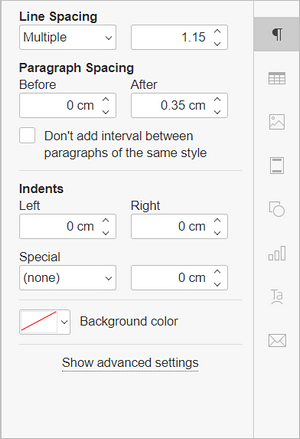

Promena uvlačenja pasusa
U Document Editor-u možete promeniti uvlačenje prvog reda od leve ivice stranice, kao i uvlačenje pasusa od leve i desne ivice stranice.
Da biste to uradili,
- podesite potrebne parametre na desnoj bočnoj traci Paragraph settings u odeljku Indents:
- Levo – podešava uvlačenje pasusa od leve ivice stranice unosom odgovarajuće numeričke vrednosti,
- Desno – podešava uvlačenje pasusa od desne ivice stranice unosom odgovarajuće numeričke vrednosti,
- Posebno – podešava uvlačenje prvog reda pasusa: izaberite odgovarajuću stavku menija ((nema), Prvi red, Viseće) i promenite podrazumevanu numeričku vrednost za Prvi red ili Viseće,

ili
- postavite kursor unutar željenog pasusa ili izaberite više pasusa mišem, ili ceo tekst pritiskom na kombinaciju tastera Ctrl+A,
- kliknite desnim tasterom miša i izaberite opciju Paragraph Advanced Settings iz menija ili koristite link Show advanced settings na desnoj bočnoj traci,
- u otvorenom prozoru Paragraph - Advanced Settings prebacite se na karticu Indents & Spacing i podesite potrebne parametre u odeljku Indents (opis parametara dat je iznad),
- kliknite na dugme OK.

Za brzo menjanje uvlačenja pasusa od leve ivice stranice, možete koristiti i odgovarajuće ikone na kartici Home gornje trake sa alatkama: Smanji uvlačenje i Povećaj uvlačenje .
Takođe možete koristiti horizontalni lenjir za podešavanje uvlačenja.
Izaberite potrebne pasuse i prevlačite markere uvlačenja duž lenjira.
- Marker Uvlačenje prvog reda koristi se za podešavanje uvlačenja prvog reda pasusa od leve ivice stranice.
- Marker Viseće uvlačenje koristi se za podešavanje uvlačenja drugog i svih narednih redova pasusa od leve ivice stranice.
- Marker Levo uvlačenje koristi se za podešavanje uvlačenja celog pasusa od leve ivice stranice.
- Marker Desno uvlačenje koristi se za podešavanje uvlačenja pasusa od desne ivice stranice.